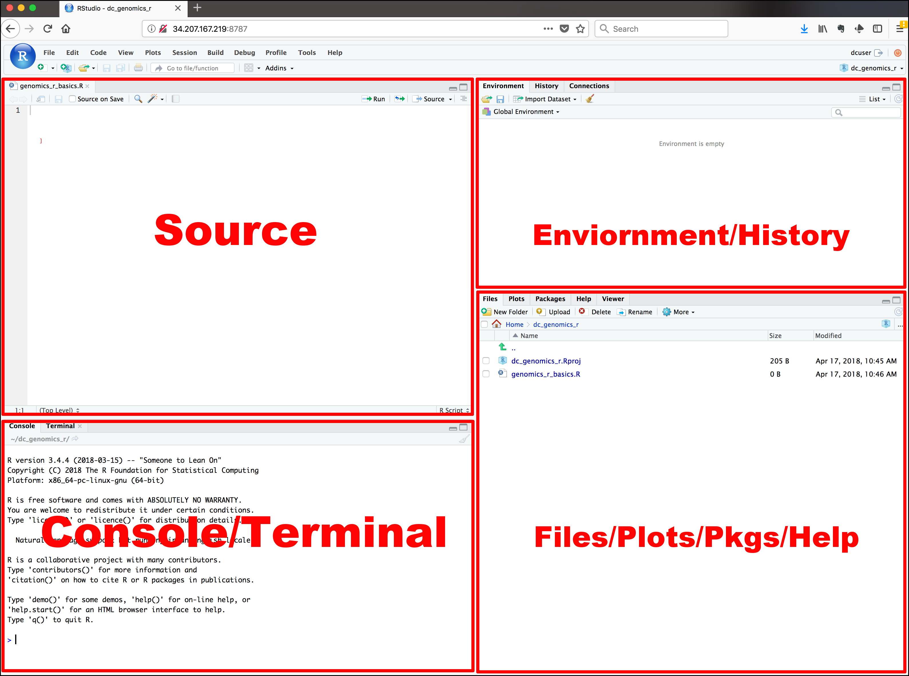

R Basics
Introduction
This chapter introduces you to R, RStudio, packages and other things to get you started in R.
R
R is a free software for statistics and graphics. It is widely
used among statisticians and data scientists for developing statistical
software and data analysis. It is also increasingly popular among
medical and public health researchers and analysts. R is primarily
developed in three programming languages: C, Fortran, and R itself.
Although It can be used by its default command-line interface, there are
several third-party integrated development environments (IDE) with a
friendly graphical user interface, including RStudio and Jupyter
Notebook.
R comes from S programming language. S was created by John
Chambers in
1976 at Bell Labs. Later two statisticians, Ross Ihaka and Robert
Gentleman developed R that is currently developed by the R Development
Core Team. R is named partly after them and partly as a play on the
name of S.
R has a steep learning curve, especially for people working in the
health sector, including medical doctors and public health
professionals. They just want to get on with data analysis, rather than
spending months or even years to master the basics of programming
aspects of R. Although these may be the core advantages of R that may
come into use later, it seems a very daunting process to them. With that
in mind, the mStats package is developed to speed up the process of
learning data analysis in R without the need of detailed knowledge of
the basics of R. There are several such well-known packages for
epidemiological calculations such as epicalc, epiR, epitools and
epistats. There are advantages of using the mStats. First, all
functions are developed from the user perspectives to be easy to recall
their names. Second, they only perform a task with fewer options than a
conventional function in R. This simplifies the thinking and
implementation process. Third, the first input into the function is
data. This has two benefits. It saves the nuisance of writing
subsetting commands and these functions can handle the pipe operation
using the function, %>% of the package magrittr.
R can be downloaded from http://cran.r-project.org/.
RStudio
RStudio is an integrated development environment for R. It meansIt
comes in two versions: Desktop version is a desktop application and
server version runs on a web browser. Regular RStudio for personal
usage is free for both desktop and server version.
If R is a car engine, then RStudio is every other thing that makes driving car fun.
RStudio can be downloaded from
https://rstudio.com/products/rstudio/download.
RStudio’s Interface
The interface has four windows. Each window may have several tabs or sub-windows. By default, Source is on the top-left corner, console on bottom-left, environment on top-right, and files on bottom-right.
Sourceis a text editor that will be referred to as R Script later on. You can write commands and save them, which is the main point of reproducibility. Anyone who has this R Script can review and edit it in the future.Consoleis the place you write your line-by-line command. It means you can only write a single command or a long paragraph of commands. After you close the RStudio, the commands will not be saved unless you specified to do so. However, it is the best way to saving R Script to store the commands you desire.- Symbol “>” called prompt
- Type
3 + 4, and pressEnter.
Environmenthas several sub-windows. For data management and beginner, you only have to knowEnvironmentandHistory.Environmentis where R works.Global Environmentis the place where your data will be after importing data.Historysaves the commands you run in R console.Connectionsis where you connect to external databases.
Filesalso has several sub-windows.Filesis like a folder manager on your phone. You can manage files and folders as well as set the working directory.Plotsis where your plots will appear.Packagesis where you manage your R packages. You can install it from CRAN or other repositories. You can also install locally stored R packages.Helpis where R stores documentations. You can open the help or introduction page of the respective packages as well as individual functions.

Packages in R
Base R is what you get after installing R. R is powerful because of
its tens of thousands of packages. The number is still growing. This
also creates the problem of confusion. Even no single user can check or
use all packages within his field. A solution is to stick to certain
packages that work well for you.
There are tons of recommendations out there, listing all popular packages in R. The strategy is to try out a few packages and remember the ones that work well. If a function you want to use does not exist and it is still possible, you can write the package yourself and contribute to the R community. Here is a list of R packages I find useful for my work though it may not be a comprehensive list:
- Data import
readrfor reading and writing text data like comma-separated valueCSVfilereadxlfor reading excel files (bothxlsandxlsx)havenforSTATA,SPSSandSASformatforeignfor EpiData.recfile
- Data management
- tidyverse
- mStats
- Epidemiological calculation
epicalcmStatsepiRepitools
- Statistical data analysis
geeandgeepackfor hierarchical data modelingsurvminerfor survival analysis
To install a package, you can use the following command if it is
published on CRAN. CRAN is the comprehensive R Archive Network,
web servers that store R packages.
For packages published on GitHub, use the following command. Note that each package usually provides different instructions for installation.
The package on Github is usually up-to-date and often free from previous issues and bugs.
Let us install the packages used in this book.
## install tidyverse will automatically include magrittr
install.packages("tidyverse", dependencies = TRUE)
## install other packages:
install.packages(c("readr", "readxl", "haven"))
Below we install mStats package. Choose only one method. Method 1 can
be a bit daunting for beginners should it needs installations of
dependencies including Rtools.
Method 3 is the easiest one.
## Method 1: install latest version of mStats
install.packages("devtools", dependencies = TRUE)
library(devtools)
install_github("myominnoo/mStats")
## Method 2: install mStats version from CRAN
install.packages("mStats")
## Method 3: direct installation from my webpage.
install.packages("https://myominnoo.github.io/pages/r/mStats_3.3.1.tar.gz", repos = NULL, type = "source")
Check detail on previous versions on my webpage. https://myominnoo.github.io/pages/r_archives.html
Functions in R
In R, everything is called an object and function is also a type of
object. Functions are used to perform certain actions or tasks and if a
result is returned, it can be stored as another object for further use.
A function needs arguments or simply inputs. Inputs can be either
must-have or optional. For example, the function tab is used to
create frequency tabulation. The arguments can be checked using str
function. str shows the structure of the R object.
library(mStats)
str(codebook)
#> function (data)
#> - attr(*, "srcref")= 'srcref' int [1:8] 23 13 53 1 13 1 25 55
#> ..- attr(*, "srcfile")=Classes 'srcfilealias', 'srcfile' <environment: 0x0000000013e154a8>
It has six inputs. But it only needs the first one data to work. Three
dots ... means that you can put as many variables as you want for
tabulation. For the rest, they are set to some default values. For by,
the default value is set to NULL, which means it performs frequency
tabulation. If a categorical variable is specified, it generates a
contingency table and reports p-values from association tests
(Chi-squared and Fisher’s Exact).
The input for row.pct can be TRUE, FALSE or NULL. If TRUE, it
reports row percentages. If FALSE, column percentages, and if
NULL, no percentages. You can remove missing levels in the table by
specifying na.rm to FALSE. You can set your desired level of decimal
with rnd input.
The outputs from functions in R can be stored as an object. However,
what you see in the console may not be the exact format or content that
the function returns. It means that you do not always get what you see.
(What you see is what you get - WYSIWYG)
Masking
The mStatspackage contains two functions (append, replace) that
have the same names (doing different operation) with base R packages
(stats and base). Loading the mStats masks the functions from base
R. It means that when you use append function, you are using the
function from mStats. To avoid this:
- use the syntax
package::function(), for examplebase::append()ormStats::append(). - remove
mStatsfrom the session usingdetach(package:mStats).
Here is an example of using read_dta function from haven package.
## directly using read_dta function from haven package
## without loading it
haven::read_dta("file.dta")
This is often handy when you only need to use a function of the package one or two times.
Piping %>%
Data management usually involves multiple steps to produce the final
polished dataset. These are usually sequential operations done on the
same dataset. The pipe operator %>% from the package magrittr
streamlines such operations into comprehensible steps or structures so
that R codes become more readable to the users.
The pipe operator %>% essentially hands over the left-hand side values
(dataset in this case) into the function that appears on the right-hand
side. This is frequently written in two lines that the right-hand side
appears on the next line below. This process is called piping, like
joing pipes to continue the water flow.
Check the example below. A series of tasks are performed to get the desired output in a continuous workflow, starting from importing data into R to summarizing variables.
By piping %>%, the raw dataset is being handed over to the right-hand
side. The dataset being handed behind the scene is stored as an object
named ..
This is then put into the function, replace where the variables
test1 and test2 are checked whether they are equal to -99. If
equal, these values are replaced with NA, the missing value in R. Of
course, these two tasks are done one after another.
After that, the now-updated dataset . is put into generate function.
The function again takes test1 and test2 and creates a new variable
called average based on the formula specified.
Finally, the dataset, still named ., is now being used in summ
function to generate summary statistics of test1, test2 and
average.
When the pipe operator %>% is used, the input data does not need to
be specified. This is because the dot . that represents the modified
dataset along the piping process is automatically passed into that
data input. Check the two examples below that produces the same
output.
## Here is a series of operations:
## 1) Import STATA's dta format from online
## 2) Replace test1 and test2 if they are -99, meaning missing value
## 3) Generate a new variable name "average" by taking average of the two tests
## 4) Summarize all three variables
haven::read_dta("https://stats.idre.ucla.edu/stat/data/patient_pt1_stata_dm.dta") %>%
replace(test1, NA, test1 == -99) %>%
replace(test2, NA, test2 == -99) %>%
generate(average, (test1 + test2) / 2 ) %>%
summ(test1, test2, average)
As you can see from the output in the console, notification of what have
been done is a great way to track whether the functions are doing what
they are supposed to do. There are 7 values changed to NA in both
test1 and test2, and 11 NA values when average is created. These
are consistent with numbers reported the column NA. of the Summary
output.
Being able to run these codes in your RStudio means that you just used R for data management and analysis. Well done! I hope this gets you inspired to continue reading the book.
Versions used in this book
Versions are important to make references in case you run into errors.
## R version
version
#> _
#> platform x86_64-w64-mingw32
#> arch x86_64
#> os mingw32
#> system x86_64, mingw32
#> status
#> major 4
#> minor 1.0
#> year 2021
#> month 05
#> day 18
#> svn rev 80317
#> language R
#> version.string R version 4.1.0 (2021-05-18)
#> nickname Camp Pontanezen
## mStats version
packageVersion("mStats")
#> [1] '3.5.0'
packageVersion("tidyverse")
#> [1] '1.3.1'
packageVersion("readr")
#> [1] '1.4.0'
packageVersion("readxl")
#> [1] '1.3.1'
packageVersion("haven")
#> [1] '2.4.1'
If you do not have R or this version of R, download and install it from the official website. https://www.r-project.org/.
If you don’t have mStats installed, see the section
above,Packages in R.
Getting help
If you encounter an error or the function does not work, please file an issue with a minimal reproducible example on GitHub.
For questions and other discussion, please email me view dr.myominnoo@gmail.com.
Please note that this project is looking for contributors. By participating in this project, you agree to abide by its terms with Contributor Code of Conduct, version 1.0.0, available at https://www.contributor-covenant.org/version/1/0/0/code-of-conduct/.
Intention of the book
This book is intended to guide new R users to quickly get on with data
management and analysis. The package is also largely inspired by STATA
software, hence STATA users may benefit largely from this book.
References
- STATA DATA MANAGEMENT. UCLA: Statistical Consulting Group. from https://stats.idre.ucla.edu/stata/seminars/stata-data-management/ (accessed March 23, 2020).
- SUBSETTING DATA | STATA LEARNING MODULES. UCLA: Statistical Consulting Group. from https://stats.idre.ucla.edu/stata/modules/ubsetting-data/ (accessed March 23, 2020).
- LABELING DATA | STATA LEARNING MODULES. UCLA: Statistical Consulting Group. from https://stats.idre.ucla.edu/stata/modules/labeling-data/ (accessed March 23, 2020).
- LOGISTIC REGRESSION | STATA DATA ANALYSIS EXAMPLES. UCLA: Statistical Consulting Group. from https://stats.idre.ucla.edu/stata/dae/logistic-regression/ (accessed March 23, 2020).
- REGRESSION ANALYSIS | STATA ANNOTATED OUTPUT. UCLA: Statistical Consulting Group. from https://stats.idre.ucla.edu/stata/output/regression-analysis/ (accessed March 23, 2020).
- Betty R. Kirkwood, Jonathan A.C. Sterne (2006, ISBN:978 0 86542 871 3)
- Burt B. Gerstman (2013, ISBN:978 1 4443 3608 5)
- Douglas G. Altman (2005, ISBN:0 7279 1375 1)
- R Fundamentals, R Core Development Team, 2006
- R for Data Science, Hadley Wickham & Garrett Grolemund, 2017
- Advanced R, Hadley Wickham
- Exploratory Data Analysis with R, Roger D. Peng
- R Programming by Robin Evans: http://www.stats.ox.ac.uk/~evans/teaching.htm
- All books and websites that I forget to mention